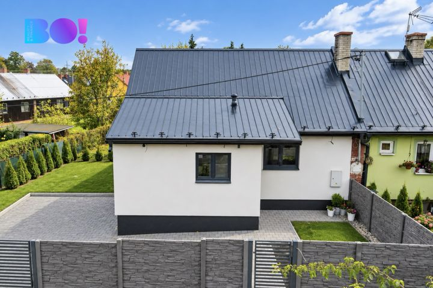
New to tracker — actual advert age unknown
Prodej domu/vily, 90 m²
Prodej domu/vily, 90 m²
Not stated → 7,900,000 CZK
Original advert ↗Daily market update · 2026-11-14 · Ostrava + 15 km
Data limitation: Prices are advertised, not completed transaction prices. Disappeared adverts are NOT proof of sold or rented status. Search radius may be unverified for individual locations. "New" means first observed since a comparable complete Sreality scan, not independently verified as newly published. "New to tracker" may reflect expanded or partial portal coverage. Older Sreality IDs and known cross-lists are excluded. Additional monthly rental charges are not reliably supplied in these search cards.

Prodej domu/vily, 90 m²
Not stated → 7,900,000 CZK
Original advert ↗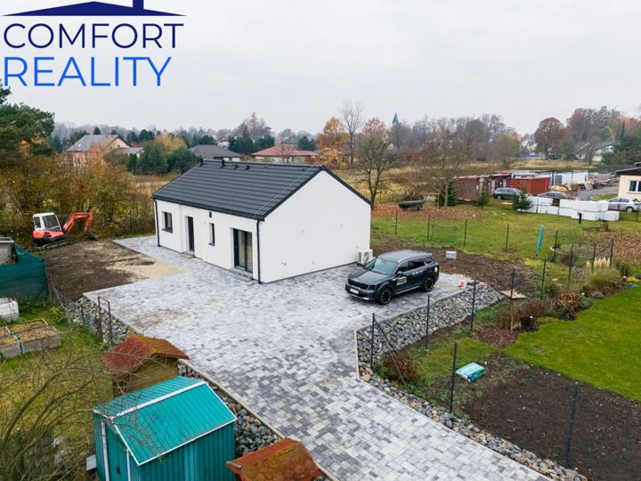
Prodej domu/vily, 69 m²
Not stated → 9,600,000 CZK
Original advert ↗Svinov, Ostrava-město
Not stated → 9,600,000 CZK
Original advert ↗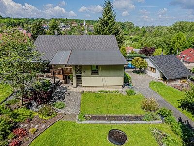
Michálkovice, Ostrava-město
9,900,000 CZK → Not stated
Original advert ↗
Bludovice, Karviná
3,900,000 CZK → Not stated
Original advert ↗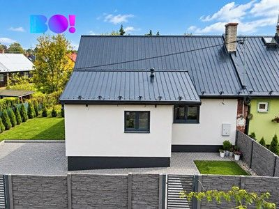
Muglinov, Ostrava-město
Not stated → 7,900,000 CZK
Original advert ↗
Místek, Frýdek-Místek
12,350,000 CZK → Not stated
Original advert ↗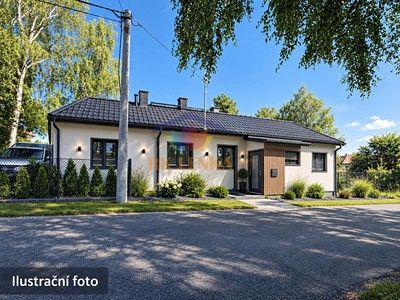
Rychvald, Karviná
2,100,000 CZK → 2,100,000 CZK
Original advert ↗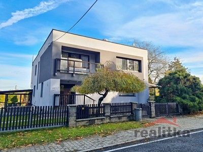
Komárovské Chaloupky, Opava
Not stated → 10,990,000 CZK
Original advert ↗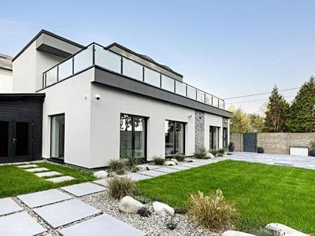
Stará Bělá, Ostrava-město
17,990,000 CZK → 17,990,000 CZK
Original advert ↗
Horní Těrlicko, Karviná
6,690,000 CZK → Not stated
Original advert ↗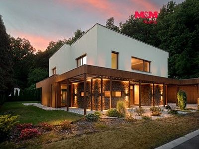
Bílovec, Nový Jičín
13,490,000 CZK → Not stated
Original advert ↗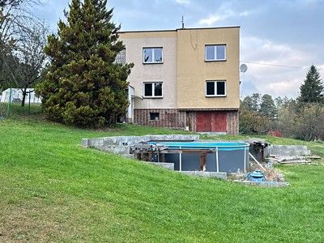
Dětmarovice, Karviná
Not stated → 4,500,000 CZK
Original advert ↗
Pustějov, Nový Jičín
3,850,000 CZK → Not stated
Original advert ↗
Petřvald 1-Petřvald, Nový Jičín
7,300,000 CZK → Not stated
Original advert ↗
Podlesí, Karviná
7,700,000 CZK → 7,700,000 CZK
Original advert ↗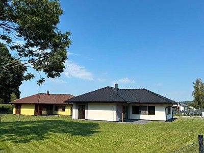
Baška, Frýdek-Místek
11,250,000 CZK → 11,200,000 CZK -0.44%
Original advert ↗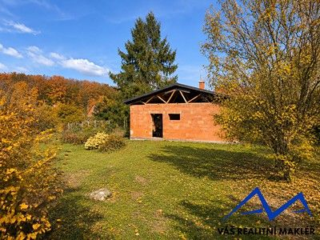
Město, Karviná
Not stated → 4,700,000 CZK
Original advert ↗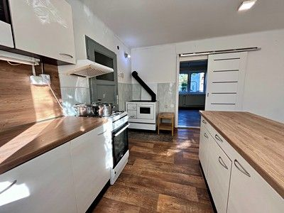
Petřvald, Nový Jičín
4,500,000 CZK → 4,500,000 CZK
Original advert ↗
Albrechtice, Karviná
2,990,000 CZK → Not stated
Original advert ↗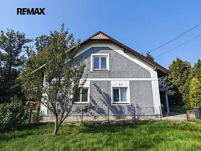
Sedlnice, Nový Jičín
3,690,000 CZK → Not stated
Original advert ↗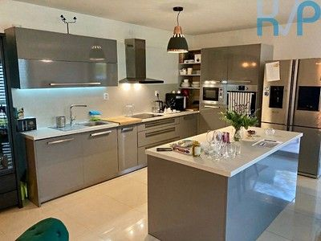
Borová, Opava
13,490,000 CZK → 12,990,000 CZK -3.71%
Original advert ↗Borová, Opava
13,490,000 CZK → 12,990,000 CZK
Original advert ↗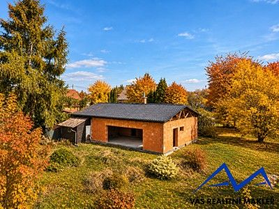
Město, Karviná
Not stated → 4,700,000 CZK
Original advert ↗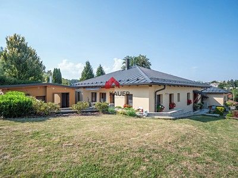
Dolní Lhota, Ostrava-město
20,800,000 CZK → Not stated
Original advert ↗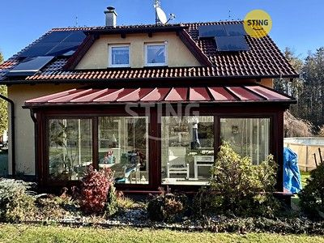
Nošovice, Frýdek-Místek
Not stated → 9,500,000 CZK
Original advert ↗